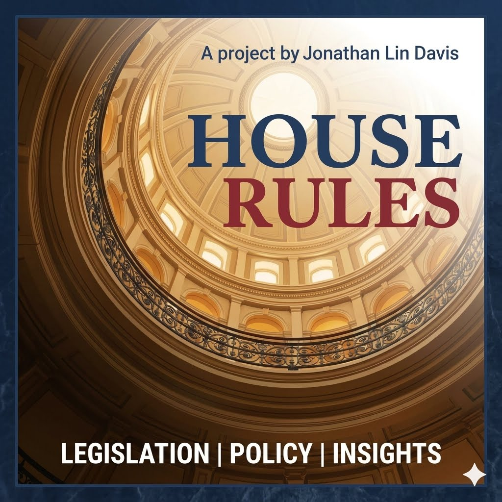
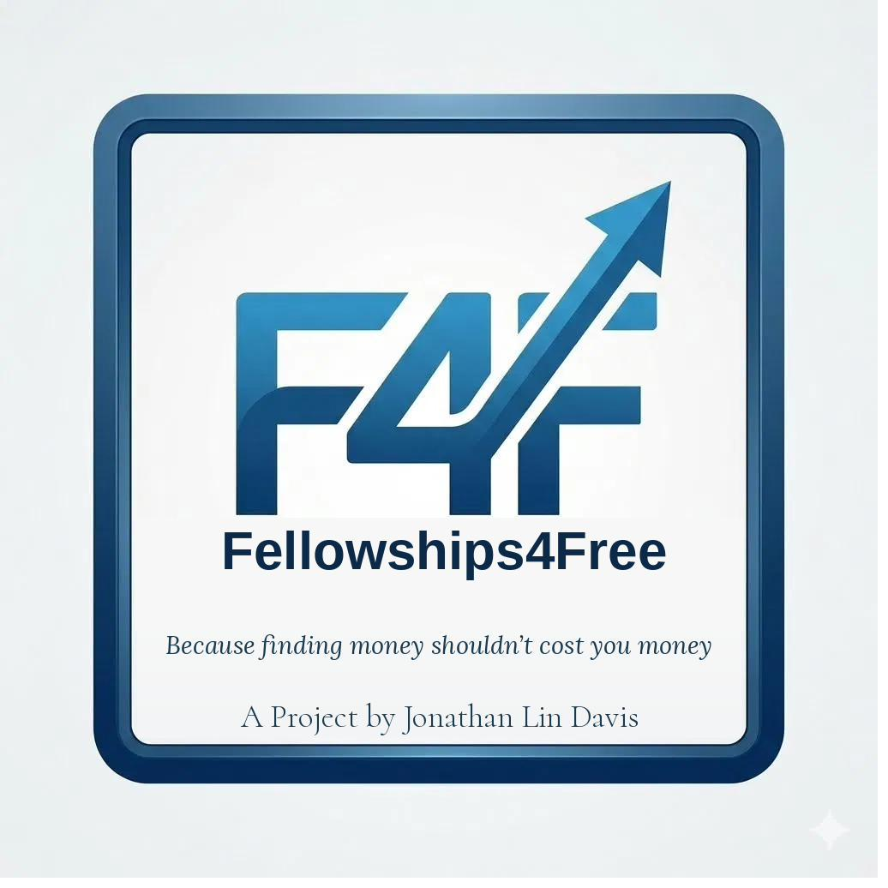

Research
Projects

Weekly Publication
House Rules
Nonpartisan, plain-language analysis of Texas Capitol legislation and policy, published every week.
Explore House Rules →
Open-Data Project
Fellowships For Free
A free, open index of graduate and early-career fellowships, because finding money shouldn’t cost you money.
Explore Fellowships For Free →